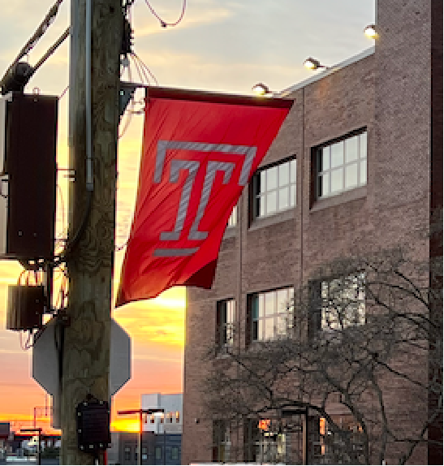

📈 Regression Microprojects
Put your Lab 8 regression toolbox to work on real data
🧭 How it works
- Your instructor randomly assigns you to one microproject. Open only your assigned notebook below.
- Run the first cells, set
name, and run my_project(name) to confirm your assignment.
- Paste in your Lab 8 toolbox, explore the data, fit and check your line, and dig into the twist.
- Make one publication-quality figure and send it to the class gallery with
submit_plot(...).
Click a button to open the notebook on the hub.
🧪 Student Microprojects
🧑🏫 Instructor
Review: Inferential Thinking, Chapter 15 — Prediction